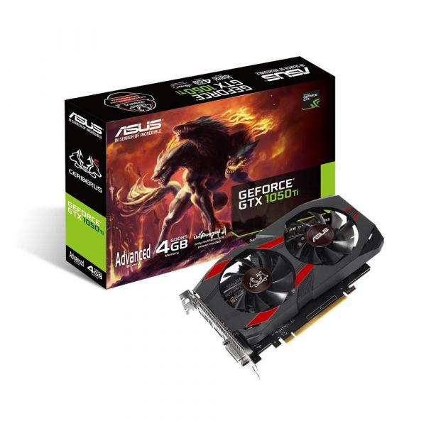
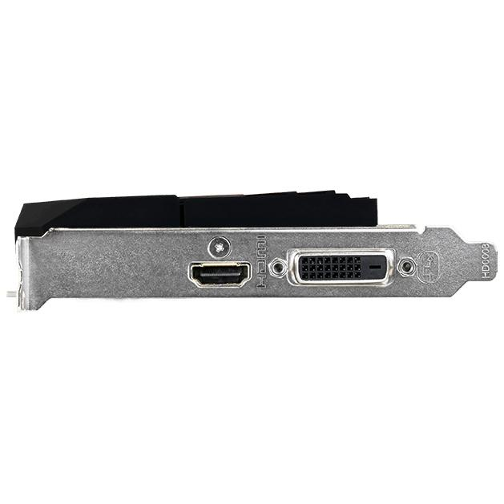
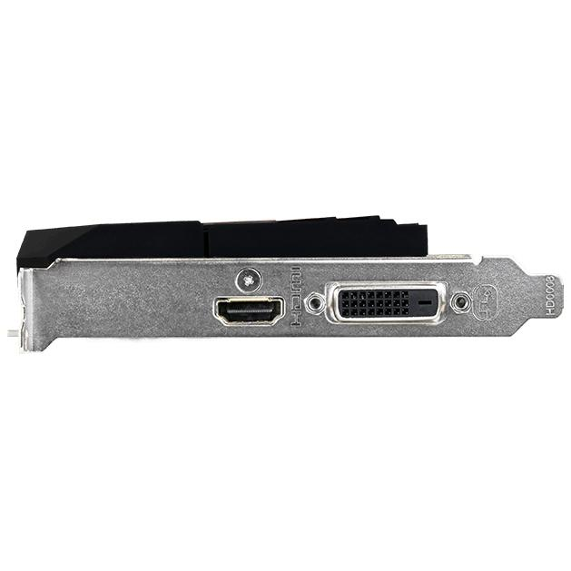

Kaip sužinoti, kokią grafikos plokštę turiu? („Windows 10“) - 2020
2020.10.29 12:41
https://questionofwill.com priklausomybės administravimas ir finansai alternatyvioji medicina anatomija ir fiziologija nerimas menas
Kaip sužinoti, kokią grafikos plokštę turiu? („Windows 10“)
Žinant, kokią grafinę plokštę turite kompiuteryje su „Windows 10“, labai svarbu, nes per šią informaciją galite atsisiųsti, įdiegti ir atnaujinti reikalingus tvarkykles.
Grafinė kortelė, vaizdo plokštė arba vaizdo plokštė yra pagrindinė ir esminė kompiuterio sudedamoji dalis, nes ji yra atsakinga už visų kompiuterio ir visų jį valdančių programų grafinių (ty vaizdinių) duomenų tvarkymą.,
Tai dar svarbiau, jei jūsų kompiuteris yra naudojamas programoms, kurioms reikia daug išteklių, pvz., „AutoCAD“, vaizdo žaidimų, emuliatorių, pvz., „Android Studio SDK“.
Būdai, kaip sužinoti, kokią grafinę plokštę turi jūsų kompiuteris
Norėdami sužinoti, kokia grafinė kortelė yra jūsų kompiuteryje, yra 4 pagrindiniai būdai. Šios formos paaiškinamos naudojant „Windows 10“, bet galite pabandyti naudoti „Windows 8“ ir „Windows 8.1“.
Per įrenginio tvarkyklę
Įrenginių tvarkyklė yra įrankis, kuris „Windows“ suteikia galimybę peržiūrėti ir valdyti kompiuteryje įdiegtų įrenginių konfigūraciją.
1.- Norėdami įeiti, paspauskite „Windows“ klavišą + X
2.- Tai atlikus, apatiniame dešiniajame kampe bus atidarytas meniu. Čia spustelėkite „Įrenginių tvarkytuvė“.
3.- Jūs atidarysite įrenginio tvarkyklę, spustelėkite „Ekrano adapteriai“. Bus jūsų kompiuterio grafinės kortelės pavadinimas.
Per komandą „msinfo32“
Komanda msinfo32 yra įrankis, leidžiantis matyti sistemos informaciją ir, žinoma, kompiuterio grafinės kortelės informaciją.
Šis įrankis yra daug išsamesnis, kad pamatytumėte kompiuterio informaciją, nes jis ne tik parodo kortelės pavadinimą, bet ir parodo kiekvieną iš detalių savybių.
1.- Norėdami naudoti komandą, pirmas dalykas, kurį reikia padaryti, yra klaviatūroje paspausti „Windows + r“.
2.- Jūs atidarysite langą apatiniame kairiajame kampe, ten turėsite rašyti „msinfo32“ be kabučių ir paspauskite mygtuką „Priimti“.
3.- Atidarytame lange turite dukart paspausti „Komponentai“ ir tada spustelėkite „Ekranas“.
Dešinėje ekrano pusėje pamatysite:
- Vardas : nurodo tikslią įdiegtos grafinės kortelės modelį. Pavyzdys rodo „Intel“ grafikos šeimą, bet jūsų atveju gali kilti kažkas kito.
Jei norite daugiau sužinoti apie įdiegtą grafinę kortelę, ieškokite tokio pavadinimo internete.
- Adapterio aprašymas : tai grafinio kortelės modelio pavadinimas, nes kartais gamintojai turi tokį patį pavadinimą keliems modeliams. Be to, galėčiau pasakyti, ar jūsų turima kortelė yra integruota į kompiuterio pagrindinę plokštę.
Šio pavyzdžio atveju kortelė yra integruota į pagrindinę plokštę, todėl, jei ji sugadinta, visa plokštelė turi būti pakeista.
- Adapterio RAM : tai vaizdo įrašo atmintis, kurioje yra įdiegta grafinė kortelė. Jis gali būti nurodytas GB, MB arba Bytes.
- Įdiegti vairuotojai : čia pamatysite tvarkykles, kuriomis veikia jūsų grafikos plokštė.
- „V ersión“ vairuotojui : jis turi žinoti, kokia versija yra įdiegta. Tai svarbu, nes gamintojai paprastai atnaujina savo vairuotojus, kad pagerintų našumą.
- Rezoliucija : tai dydis, kuriuo veikia jūsų grafikos plokštė.
Per „dxdiag“
DxDiag yra dar vienas įrankis, kuriame yra „Windows“, kuri renka informaciją apie įrenginius.
1.- Norėdami pradėti, pirmiausia reikia paspausti „Windows + R“ klavišus
2.- Atsidariusiame lange turite įvesti „dxdiag“ ir paspauskite „Accept“
3.- Atidarytame naujame lange turite pereiti į skirtuką „Ekranas“ ir spustelėkite jį.
Čia rasite informaciją apie grafikos plokštę ir valdiklius.
- Chi p tipas nurodo įdiegtos grafikos plokštės modelį.
- DAC tipas : rodo, ar grafinė kortelė yra integruota, ar ne. Pavyzdyje pastebima, kad jis sako „vidinis“, nes tai yra grafinė kortelė, integruota į pagrindinę plokštę.
4.- Jei paspausite „Išsaugoti informaciją ...“, atsidarys langas, kuriame bus išsaugota ataskaitos informacija kaip paprastas tekstinis failas.
Čia turėsite pasirinkti vietą, kurioje norite išsaugoti failą, ir pavadinimą, kurį norite įdėti, tada paspauskite „Išsaugoti“.
5.- Kai tai padarysite, uždarysite šį langą ir „DirectX diagnostikos įrankio“ lange paspauskite „Išeiti“.
6.- Suraskite teksto failą toje vietoje, kurią išsaugojote, ir du kartus spustelėkite, kad jį atidarytumėte.
Atidarius, išsamiai stebėsite viso kompiuterio konfigūraciją. Turite surasti „Display Devices“ („Vaizdo įrenginiai“) ir pamatysite visą informaciją, esančią jūsų grafikos plokštėje.
Išjungti kompiuterį
Nereikia rekomenduoti kompiuterio išjungimo, nes galite prarasti įrangos garantiją, arba dar blogiau, sugadinti gabalą. Tačiau, jei jums nepavyko sužinoti, kuri grafinė kortelė jūsų kompiuteryje yra su vienu iš ankstesnių metodų, tai gali būti pasirinktis.
Pirmiausia, mes paaiškiname, kad mes neatsakome už neteisingą pateiktą informaciją.
Norėdami išardyti kompiuterį, reikės atsuktuvo.
- Turite nuimti varžtus ir nuimti dangtelį.
- Raskite PCI lizdą.
- Parašykite numerius ir raides, esančias kortelėje, esančioje PCI lizde. Ieškokite tų pačių duomenų internete ir gausite savo grafinės kortelės informaciją.
Populiarios Temos
filosofija
Gottfried Leibniz: Biografija, įmokos ir darbai
biologija
Genetinis dreifas: priežastys, efektai, pavyzdžiai
bendroji kultūra
Hermann von Helmholtz: biografija ir įmokos
Rekomenduojama
15 Argano aliejaus nauda sveikatai
8 pagrindiniai fizikos pagalbiniai mokslai
Šeimos programa: simbolika, kaip tai padaryti ir pavyzdys
10 „Colima“ (Meksika) tradicijos ir muitinė
Kas yra mikroekosistemos ir makroekosistemos?
Populiarios Kategorijos
priklausomybės administravimas ir finansai alternatyvioji medicina anatomija ir fiziologija nerimas menas astronomija biografijos istorinių figūrų biografijos biologija knygos chemija sąvokas ir apibrėžimus smalsumas depresija Abejonės ekonomika švietimo psichologija elektronika pramogos aplinką gastronomija bendroji kultūra geografija geologija laimė Sveikas gyvenimas istorija literatūra Matematika medicina psichikos sutrikimai / psichopatologija psichinė sveikata motyvacija neuropsichologija neurologija mityba kitos frazės Asmeninis tobulėjimas Asmeninis augimas asmeninės motyvacijos frazės asmenybės sutrikimai filosofija fizinis Fizinė sveikata psichologija santykius mokslas savigarba seksualumas socialiniai įgūdžiai sportas ir mankšta tiesiai stresą technologijos kategorizuota dirbtiPopuliarios Temos
Ką studijuoja chemija?
Blasco Núñez Vela: biografija
Rekomenduojama
35 Specialiosios ugdymo frazės
Kas yra Michoacán?
Top Straipsniai
5 populiariausi Aguascalientes amatai
Boer Wars: fonas, priežastys ir pasekmės
© Copyright 2020. All Rights Reserved. questionofwill.com- Kas yra integruota grafikos plokštė?
- Skirtumas tarp atskiros ir integruotos grafikos kortelės ...
- grafikos plokštės
- Vaizdo Plokštės GeForce, Radeon. Vaizdo Plokste Internetu ...
- NAUJOS GRAFIKOS PLOKŠTĖS ĮDIEGIMAS! - ŽAIDIMAI(2020)
- Grafikos plokštę "HD 7970: techninė harakterisitki ir ...
- Vga grafikos plokštės aprašymas - Įranga - 2020
- 10 geriausių kompiuterio grafikos plokštės 2018 m - Žmonių ...
- Kaip sužinoti, kokią grafikos plokštę turiu? („Windows 10 ...
- Grafikos kortelių reitingas - palyginimų sąrašas 2020
- Kas yra integruota grafikos plokštė?
Papildomi būdai sužinoti, kuri grafikos plokštė naudoja „Windows“ Be jau aprašytų metodų, „Windows 10“, „8“ ir „Windows 7“ yra papildomi sistemos įrankiai, leidžiantys gauti informaciją apie vaizdo plokštės modelį ir gamintoją, kuris kai kuriais atvejais gali būti naudingas (pvz., Jei administratoriui neleidžiama ...
- Skirtumas tarp atskiros ir integruotos grafikos kortelės ...
Pavyzdžiui, integruota "Intel" grafikos plokštė sunaudoja ne daugiau kaip 15 vatų. Todėl temperatūros režimas yra švelnesnis - galite sumažinti triukšmingų ventiliatorių skaičių sistemos vienete. Trečia, linijų skaičius ir ilgis mažėjaSistemos autobusas naudojamas bendrauti su kortele, todėl galite gauti aiškesnį vaizdą ...
- grafikos plokštės
Žinant, kokią grafinę plokštę turite kompiuteryje su „Windows 10“, labai svarbu, nes per šią informaciją galite atsisiųsti, įdiegti ir atnaujinti reikalingus tvarkykles. Grafinė kortelė, vaizdo plokštė arba vaizdo plokštė yra pagrindinė ir esminė kompiuterio sudedamoji dalis, nes ji yra atsakinga už visų kompiuterio ir visų jį valdančių programų grafinių (ty ...
- Vaizdo Plokštės GeForce, Radeon. Vaizdo Plokste Internetu ...
Norint pakeisti grafikos plokštę, pirmiausia reikės atidaryti kompiuterio dėžę, išimti senąją ir įdėti naują plokštę. Tačiau prieš įsigyjant naują techninę įrangą labai svarbu žinoti, ar Tavo kompiuteryje yra naudojama „PCI Express“ grafikos plokštė, ar senesnė AGP.
- NAUJOS GRAFIKOS PLOKŠTĖS ĮDIEGIMAS! - ŽAIDIMAI(2020)
Kokia žaidimų vaizdo plokštė? Gera vaizdo plokštė 616 peržiūros Patugali atsakė į klausimą Birželio 24 2020 Pramogos ir laisvas laikas žaisti žaidimų kortelė Grafika kortelė grafikos plokštės kompiuterio surinkimas
- Grafikos plokštę "HD 7970: techninė harakterisitki ir ...
PC grafikos kortelės; Grafikos kortelių reitingas. Grafikas, kuriame lyginamos geriausių kompiuterio grafikos plokščių charakteristikos. Naujausia „Gforce“, „RX Radeon GPU“ greitis, palyginti su reitingu. Sužinokite, kuri darbalaukio vaizdo plokštė yra greičiausia. 2020-01-31
- Vga grafikos plokštės aprašymas - Įranga - 2020
HD vaizdo plokštė 7970 GHz Edition "buvo parduoti forma distiliuoto nuo: grafikos branduolys veikia esant 1050 MHz dažniu, o vaizdo atmintis 1500 MHz (6000 MHz). Verta pažymėti, kad gamintojas yra įvesta daugiau jokių pokyčių: tikimasi padidinti pajėgumus daugiau nei 384 bitai, ir padidinti atminties talpą iki 6 GB atsitiko.
- 10 geriausių kompiuterio grafikos plokštės 2018 m - Žmonių ...
Specialiosios ir integruotos grafikos kortelės yra dviejų tipų grafikos plokštės. Pagrindinis skirtumas tarp dviejų yra tas, kad integruota grafikos plokštė yra įmontuota į kompiuterį. Kadangi speciali grafinė plokštė yra išorinis priedas, kuris turi būti prijungtas prie pagrindinės plokštės.
- Kaip sužinoti, kokią grafikos plokštę turiu? („Windows 10 ...
Gigabyte GeForce GTX 1050 2GB grafinė plokštė 4, 4 žvaigždutės, 907 atsiliepimai "Tai buvo mano pirmoji grafikos plokštė kada nors, ir nuoširdžiai, kad žaidimų, kuriuos galiu žaisti tokioje spalvingoje kokybėje, skaičius mane visiškai gąsdina.
- Grafikos kortelių reitingas - palyginimų sąrašas 2020
Pradinio lygio vaizdo plokštė su geromis techninėmis specifikacijomis ir labai demokratiškomis sąnaudomis yra NVidia GeForce GT 610. Šio gaminio, jo parametrų ir galimybių ypatumai bus išsamiau nagrinėjami.
Papildomi būdai sužinoti, kuri grafikos plokštė naudoja „Windows“ Be jau aprašytų metodų, „Windows 10“, „8“ ir „Windows 7“ yra papildomi sistemos įrankiai, leidžiantys gauti informaciją apie vaizdo plokštės modelį ir gamintoją, kuris kai kuriais atvejais gali būti naudingas (pvz., Jei administratoriui neleidžiama ...
Pavyzdžiui, integruota "Intel" grafikos plokštė sunaudoja ne daugiau kaip 15 vatų. Todėl temperatūros režimas yra švelnesnis - galite sumažinti triukšmingų ventiliatorių skaičių sistemos vienete. Trečia, linijų skaičius ir ilgis mažėjaSistemos autobusas naudojamas bendrauti su kortele, todėl galite gauti aiškesnį vaizdą ...
Žinant, kokią grafinę plokštę turite kompiuteryje su „Windows 10“, labai svarbu, nes per šią informaciją galite atsisiųsti, įdiegti ir atnaujinti reikalingus tvarkykles. Grafinė kortelė, vaizdo plokštė arba vaizdo plokštė yra pagrindinė ir esminė kompiuterio sudedamoji dalis, nes ji yra atsakinga už visų kompiuterio ir visų jį valdančių programų grafinių (ty ...
Norint pakeisti grafikos plokštę, pirmiausia reikės atidaryti kompiuterio dėžę, išimti senąją ir įdėti naują plokštę. Tačiau prieš įsigyjant naują techninę įrangą labai svarbu žinoti, ar Tavo kompiuteryje yra naudojama „PCI Express“ grafikos plokštė, ar senesnė AGP.
Kokia žaidimų vaizdo plokštė? Gera vaizdo plokštė 616 peržiūros Patugali atsakė į klausimą Birželio 24 2020 Pramogos ir laisvas laikas žaisti žaidimų kortelė Grafika kortelė grafikos plokštės kompiuterio surinkimas
PC grafikos kortelės; Grafikos kortelių reitingas. Grafikas, kuriame lyginamos geriausių kompiuterio grafikos plokščių charakteristikos. Naujausia „Gforce“, „RX Radeon GPU“ greitis, palyginti su reitingu. Sužinokite, kuri darbalaukio vaizdo plokštė yra greičiausia. 2020-01-31
HD vaizdo plokštė 7970 GHz Edition "buvo parduoti forma distiliuoto nuo: grafikos branduolys veikia esant 1050 MHz dažniu, o vaizdo atmintis 1500 MHz (6000 MHz). Verta pažymėti, kad gamintojas yra įvesta daugiau jokių pokyčių: tikimasi padidinti pajėgumus daugiau nei 384 bitai, ir padidinti atminties talpą iki 6 GB atsitiko.
Specialiosios ir integruotos grafikos kortelės yra dviejų tipų grafikos plokštės. Pagrindinis skirtumas tarp dviejų yra tas, kad integruota grafikos plokštė yra įmontuota į kompiuterį. Kadangi speciali grafinė plokštė yra išorinis priedas, kuris turi būti prijungtas prie pagrindinės plokštės.
Gigabyte GeForce GTX 1050 2GB grafinė plokštė 4, 4 žvaigždutės, 907 atsiliepimai "Tai buvo mano pirmoji grafikos plokštė kada nors, ir nuoširdžiai, kad žaidimų, kuriuos galiu žaisti tokioje spalvingoje kokybėje, skaičius mane visiškai gąsdina.
Pradinio lygio vaizdo plokštė su geromis techninėmis specifikacijomis ir labai demokratiškomis sąnaudomis yra NVidia GeForce GT 610. Šio gaminio, jo parametrų ir galimybių ypatumai bus išsamiau nagrinėjami.

 
